oco (hollow)
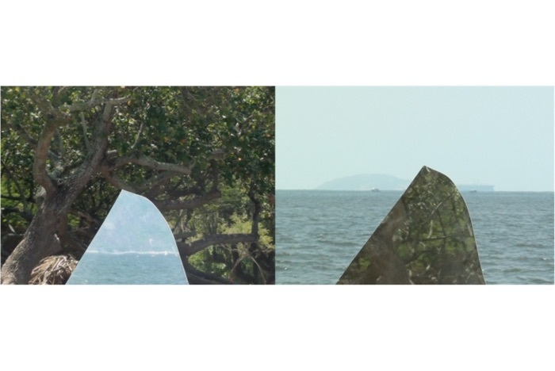
2014
video, 57’08”
Trilha/soundtrack: Leandra Lambert & 67P / Churyumov-Gerasimenko
Oco é um exercício de escuta íntima e profunda das paisagens colocadas frente à frente: a Baía de Guanabara, poluída há décadas, e o Aterro do Flamengo, uma paisagem artificial construída em parte com os escombros acumulados da destruição do Morro do Castelo.
O vídeo basicamente duplica e reflete o horizonte. Levei um espelho quebrado para a Praia do Flamengo, que tem a água e a areia mais impura da orla do Rio, e coloquei em contato o aterro e a praia. As duas paisagens são as positivas negativas uma da outra, em câmera lenta, sob o calor escaldante do clima tropical do Rio.
O díptico é banhado pela trilha sonora intitulada "sol" [em português, tanto o sol quanto a nota de música G], tocada em um piano desafinado do século XIX, acompanhado pelo som unheimlich captado por uma sonda de satélite do cometa 67P / Churyumov-Gerasimenko, que canta no espaço oco do universo.
Em seu tempo prolongado, Oco tem os personagens passando em câmera lenta entre o espelho e o fundo do quadro. Um pouco do mar é colocado sobre o aterro, um pouco de aterro é colocado sobre o mar. Ora engolidos pelo vazio do reflexo, ora surgidos deste mesmo vazio, os personagens da Praia do Castelo se chocam nas bordas do espelho e sobrevivem sob o sol mais quente a cada ano, sobre a praia mais fedorenta a cada ano, seguindo seus caminhos.
À medida que cada moldura se desdobra no tempo, os elementos que a compõem se tornam mais saturados e densos. Este horizonte não existe, mas as paisagens separam o visível do invisível: é sua condição de invisibilidade que permite que seja vista, delineada, registrada, perpetuada...
Hollow is an exercise in intimate and deep listening of the landscapes placed right in front of my apartment’s window: the Guanabara Bay, polluted for decades, and the Flamengo Landing, an artificial landscape built in part with the debris accumulated from the destruction of the Castelo Hill.
The video basically duplicates and reflects the horizon. In Hollow I carried a broken mirror to the Flamengo Beach, which has the most unclean water and sand of Rio's waterfront, and I put the Flamengo Landing and the Flamengo Beach in contact. The two landscapes are the positive negative of each other, in slow motion, under the scorching heat of Rio’s the tropical climate.
The diptych is bathed in the soundtrack entitled "sol" [in Portuguese, both the sun and the music note G], played on an out of tune, 19th century piano, dubbed by the unheimlich sound captured by a satellite probe from the comet 67P / Churyumov-Gerasimenko, which sings in the hollow space of the universe.
In its extended time, Hollow has the characters passing in slow motion between the mirror and the bottom of the frame. A little bit of the sea is placed over the landing, some landing is placed over the sea. Now swallowed by the void of reflection, now emerged from this same emptiness, the characters from the Castelo Beach moved me for the simplicity of their gestures: a boy flies a kite, a woman goes to the sea to bathe even though the water is unfit for bathing, people ride their bikes or walk, there are street vendors, birds, ships, sailboats... everything collides in the mirror edges and survive every year under the hottest sun, every year the beach is stinkier and filthier, and still people go their own ways.
As each frame unfolds in time, the elements that compose it become more saturated and dense. This horizon does not exist, but the landscapes separate the visible from the invisible: it is their condition of invisibility that allows it to be seen, outlined, registered, perpetuated…
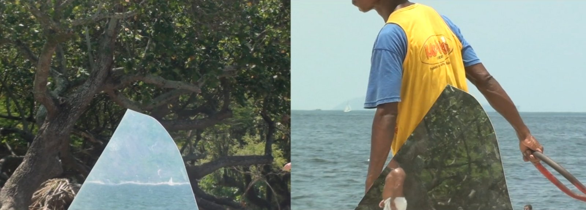
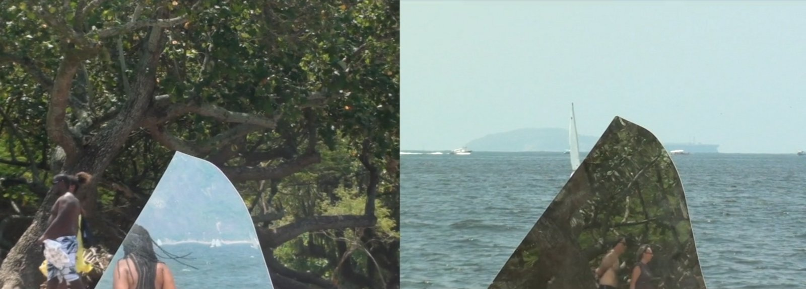
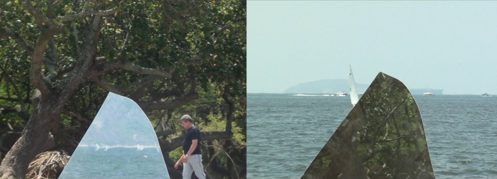
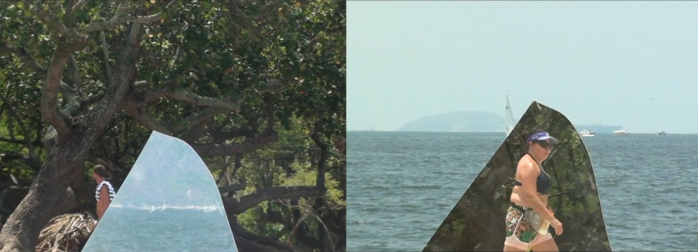
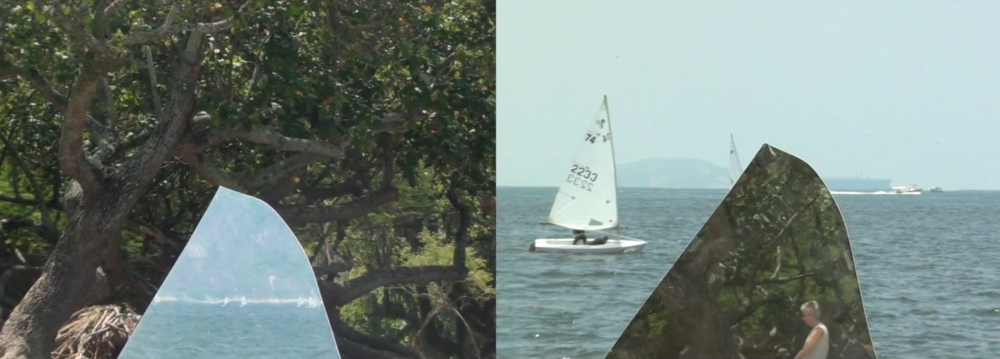
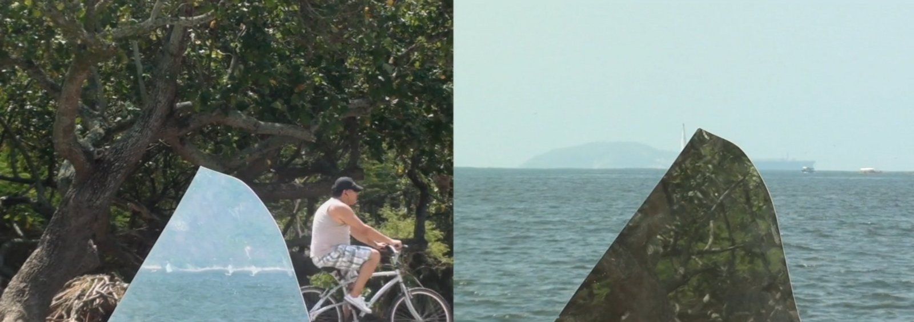
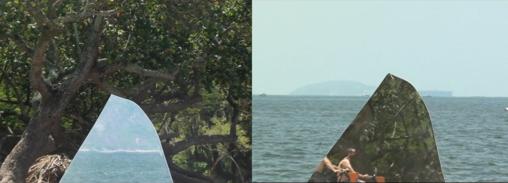
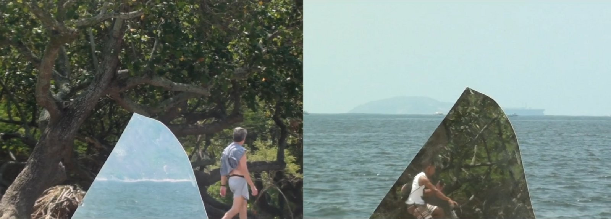
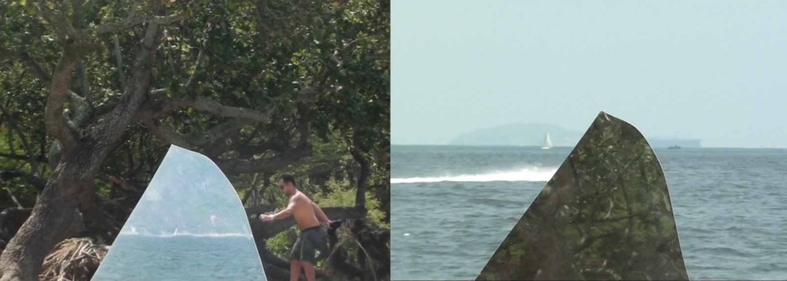
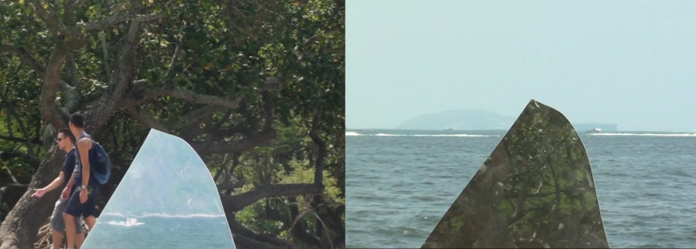
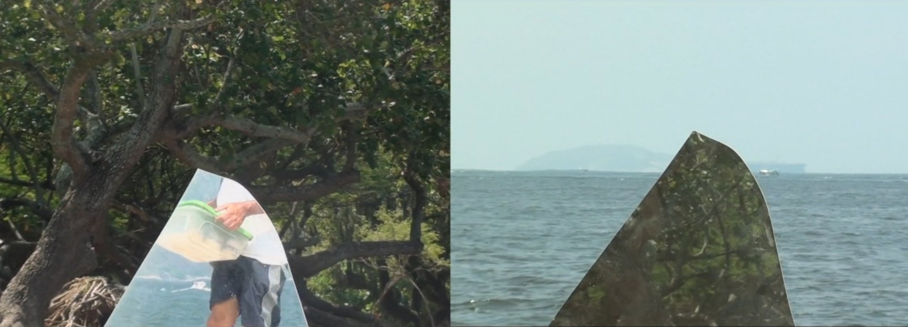